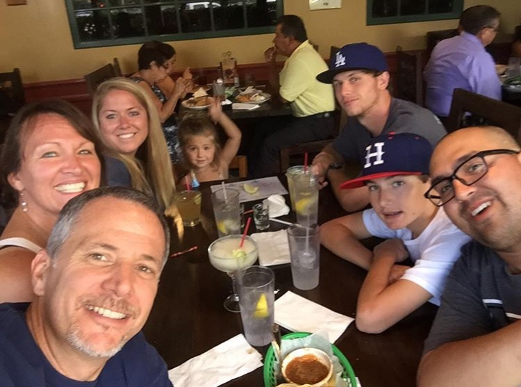

My Family
I have two brothers, my mom, my dad, our dog, and a goldfish. My Dad works at DHL, an international shipping company, where he works from 4 AM to 2 PM. My Mom is a nurse, who delivers babies and works from 7 PM to 7 AM. My oldest brother is married and has a daughter, he moved out of our house. My other brother still lives with us and is working to become a fireman.

My Skills
Some skills that I have are typing and using Google Apps. I also know how to use Photoshop and Illustrator, which are computer editing programs to modify pictures. I have skills in Computer Aided Drafting in SketchUp and Floorplanner. I am good at being active and playing sports.
My hobbies and Interests
I like to play baseball, use my phone, and play 2K18. I also enjoy using computers and watching T.V. I am interested in math, coding, baseball, computers, and basketball. I take up these interests because they are good for academics and the sports are good because they keep you active and healthy.
My Goals
I hope to be in the MLB as a starting pitcher for the Dodgers but if that goes south, getting a good degree in technology would be great aswell. College: I hope to go to UM (University of Miami) because it has a good baseball program and great academics. Career Interests: I would like to be in the MLB as a pitcher one day but if not I would enjoy a technology related job.